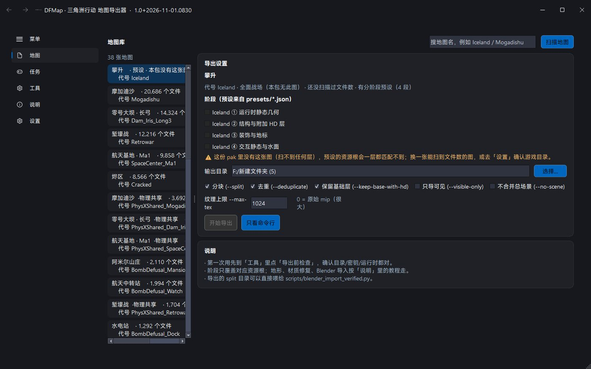
地图库
37 张 pak 地图加预设关卡，显示名与代号一起显示，搜哪个都行。
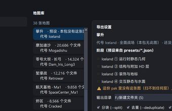
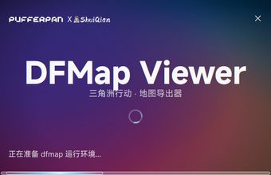
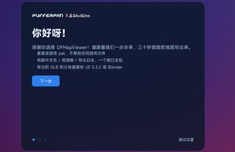
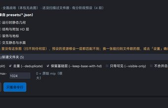
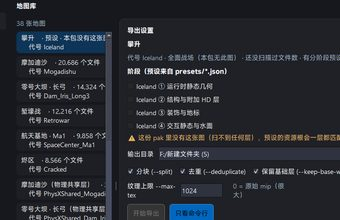
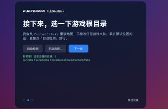
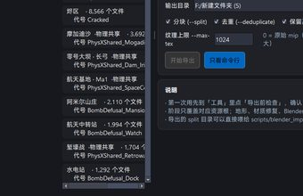
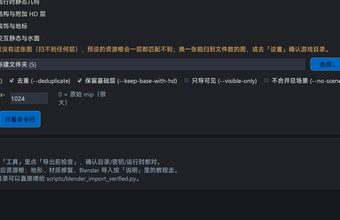
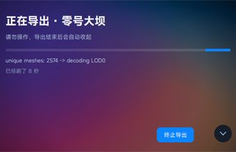
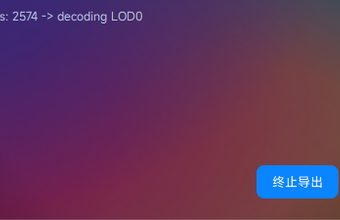
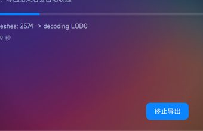
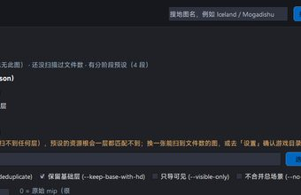
地图导出器 ｜ 1.0+2026-11-01.0930
直接读游戏 pak，不修改任何游戏文件。地图用游戏里的中文名显示， 资源根按图列出，导出时主窗口就地变成小窗盯着进度。

37 张 pak 地图加预设关卡，显示名与代号一起显示，搜哪个都行。
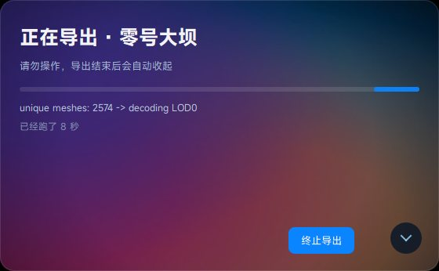
点开始导出，主窗口就地缩成右下角小窗：进度、当前动作、跑了多久都在上面。
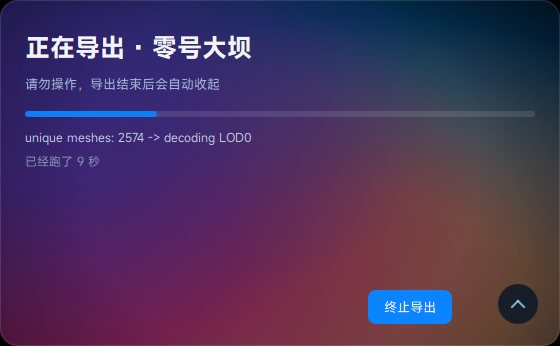
右下角小按钮下拉看导出器原始输出：levels / instances / split 分块一条不落。
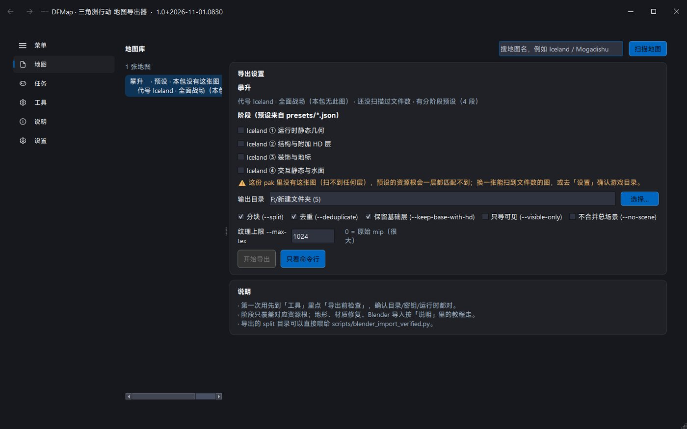
图在 pak 里不存在时，阶段勾选全部禁用并给出橙色提示，不会让你白等一次空导出。